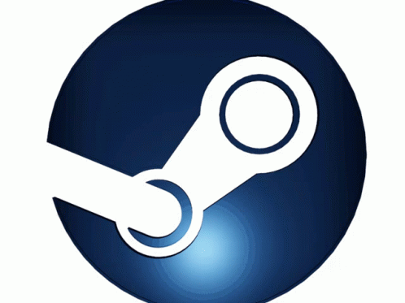
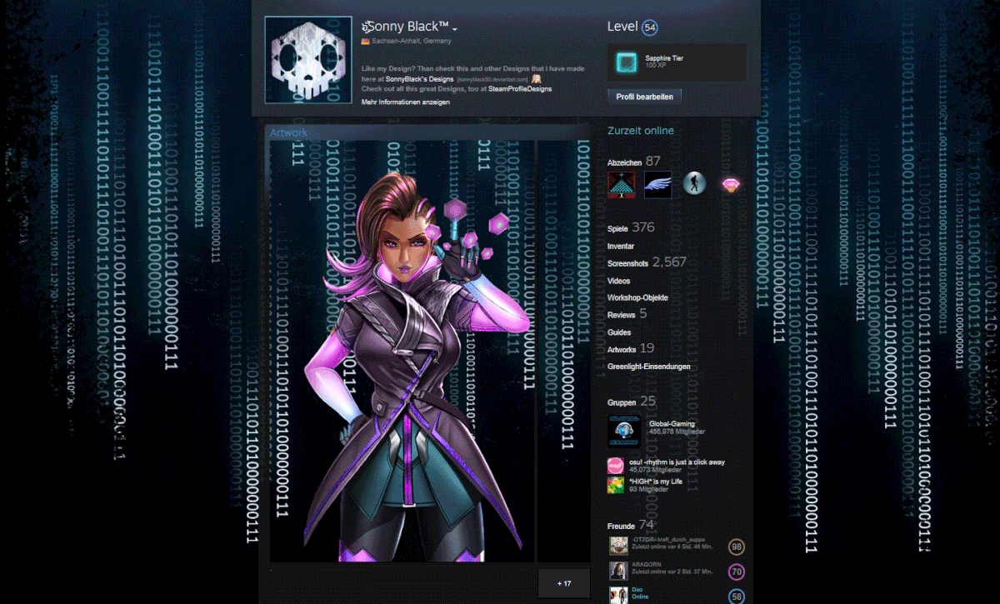
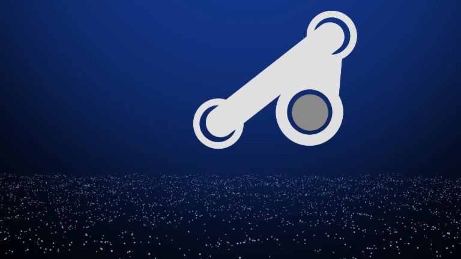
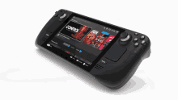
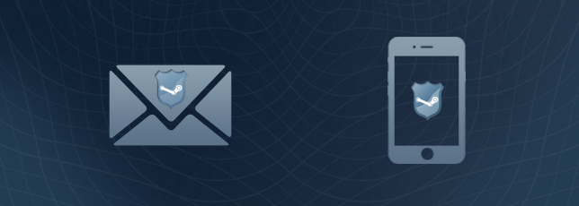

Steam

Steam es una plataforma digital creada por Valve Corporation.
Fue lanzada oficialmente en 2003.
Su objetivo principal era actualizar videojuegos automáticamente,
pero con el tiempo se convirtió en la tienda de videojuegos para PC más importante del mundo.
Actualmente millones de jugadores utilizan Steam diariamente
para comprar, descargar y jugar videojuegos online.
La plataforma revolucionó el mercado digital,
ya que permitió comprar videojuegos sin necesidad de discos físicos.
Steam también ayudó al crecimiento del gaming en PC
gracias a sus constantes actualizaciones y servicios online.
Con el paso de los años,
Steam añadió funciones sociales, guardado en la nube,
mods y herramientas para desarrolladores independientes.
Hoy en día es una de las plataformas más importantes
de toda la industria gaming.
Videojuegos Populares

Counter-Strike 2

DOTA 2

PUBG
Steam cuenta con miles de videojuegos de diferentes géneros.
Existen títulos de acción, aventura, terror, supervivencia,
simulación, carreras y multijugador.
Algunos de los videojuegos más populares son:
• Counter-Strike 2
• DOTA 2
• PUBG
• GTA V
• Elden Ring
• Red Dead Redemption 2
• Cyberpunk 2077
Steam también permite a desarrolladores independientes
publicar sus propios videojuegos mediante Steam Direct.
Muchos juegos Indie alcanzaron gran fama gracias a Steam,
como Hollow Knight, Stardew Valley y Hades.
La plataforma posee videojuegos gratuitos y de pago,
además de demos para probar títulos antes de comprarlos.
Funciones de Steam

Steam ofrece muchas herramientas para los jugadores.
Entre sus funciones principales destacan:
• Biblioteca digital de videojuegos
• Descargas automáticas
• Actualizaciones automáticas
• Logros y trofeos
• Lista de amigos
• Chat online
• Workshop para mods
• Remote Play
• Steam Deck
• Modo Big Picture
Gracias a estas funciones,
Steam se convirtió en una plataforma muy completa para PC gaming.
El sistema de Workshop permite instalar modificaciones fácilmente,
mejorando la experiencia de muchos videojuegos.
Además,
Steam ofrece estadísticas de juego,
capturas de pantalla y retransmisiones en vivo.
Comunidad

Steam posee una de las comunidades gaming más grandes del mundo.
Los jugadores pueden:
• Agregar amigos
• Crear grupos
• Compartir capturas
• Hacer transmisiones
• Escribir reseñas
• Publicar guías
• Intercambiar objetos
La comunidad ayuda a descubrir nuevos videojuegos
y compartir experiencias entre jugadores.
Las reseñas de usuarios son muy importantes,
ya que ayudan a otros jugadores a decidir qué comprar.
Steam también tiene mercados de objetos virtuales
para videojuegos como Counter-Strike y DOTA 2.
Ofertas
Steam es famosa por sus grandes descuentos.
Durante el año existen eventos especiales como:
• Steam Summer Sale
• Winter Sale
• Autumn Sale
• Spring Sale
• Halloween Sale
Muchos videojuegos reciben descuentos de hasta 90%.
Por eso Steam es una de las plataformas favoritas
para comprar videojuegos baratos.
Durante estas ofertas,
los usuarios pueden adquirir juegos AAA a precios reducidos.
También existen paquetes especiales
que incluyen varios videojuegos en una sola compra.
Steam Cloud

Steam Cloud permite guardar partidas en la nube.
Gracias a esta tecnología,
los jugadores pueden continuar sus juegos
desde diferentes computadoras sin perder progreso.
Las partidas se sincronizan automáticamente mediante internet.
Es una función muy importante para jugadores que usan varias PCs.
Steam Cloud también protege los archivos guardados
en caso de fallos del sistema o pérdida de información.
Muchos videojuegos modernos utilizan esta tecnología
para facilitar la experiencia del jugador.
Steam Deck

Steam Deck es la consola portátil creada por Valve.
Fue lanzada en 2022
y permite jugar videojuegos de Steam de forma portátil.
Cuenta con controles integrados,
pantalla táctil y sistema operativo SteamOS.
Características principales:
• Compatible con miles de juegos
• Diseño portátil
• Almacenamiento SSD
• Compatibilidad con controles externos
• Modo PC escritorio
Steam Deck se convirtió en una de las consolas portátiles
más populares del mercado gaming.
Seguridad

Steam cuenta con diferentes sistemas de seguridad
para proteger las cuentas de los usuarios.
Uno de los más importantes es Steam Guard.
Steam Guard añade verificación adicional
para evitar robos de cuentas.
También existen medidas como:
• Verificación por correo
• Autenticador móvil
• Protección contra fraudes
• Recuperación de cuenta
Estas herramientas ayudan a mantener segura
la información y los videojuegos comprados por los usuarios.